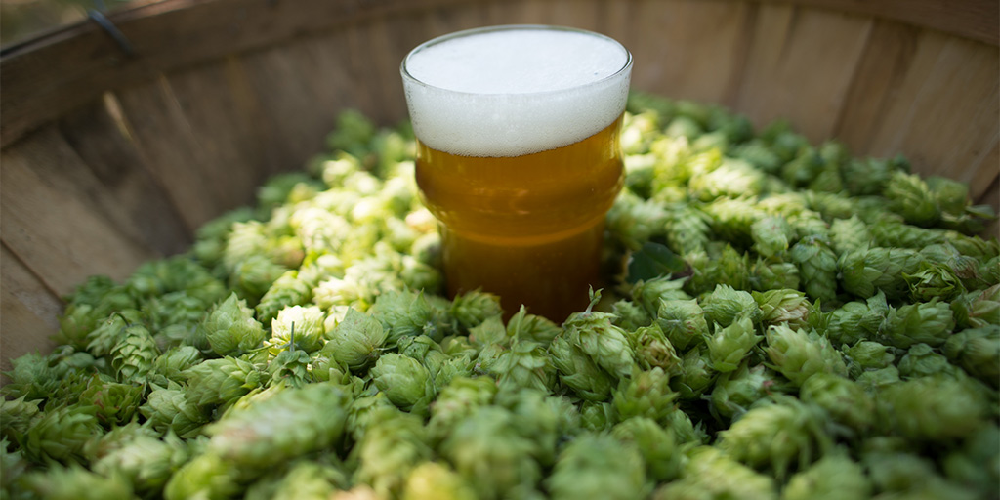

Overview
Product reviews are a great source of information to learn more about what influences consumer satisfaction. However, transforming unstructured text into a format amenable for machine learning can be a daunting task. In this post, we’ll outline an end-to-end workflow that can be leveraged to extract meaning from text. While the focus is on one my favorite topics – beer – the approach described herein generalizes to any text-based analysis and will cover the following:
🍺 How to web scrape reviews with Python’s BeautifulSoup package
🍺 How to extract and process text via R’s tidytext package
🍺 How to build an interpretable Lasso Regression model with the glmnet package
Let’s get started!
Reverse Engineering the Imperial Pale Ale
Imagine you run a brewery and are tasked with making a new Imperial Pale Ale (IPA). What flavors would you want to highlight? Would it be high or low in alcohol (ABV)? Would it have a dry or sweet finish? The potential combination of strengths, flavors, aromas, finishes, and all other sensory notes that unite to create a great beer are endless. Instead of trying to guess a starting point, you look to a reliable source for all things beer: beeradvocate.com, a website that has millions of reviews on every style of beer imaginable. The objective is to understand what separates an average IPA from a great IPA. For example, does a 7.5% ABV IPA with hints of lemon, mango, and bready malts receive higher ratings (on average) than a 5.5% ABV session IPA with lots of carbonation, orange peel, and floral notes?
To answer this question, we’ll use the Python script below (see appendix) to extract ~21,500 reviews from Beeradvocate. Luckily, all of the hard work is already done and the resulting data can be downloaded directly from 🎄 the codeforest github repo 🎄. The two files we’ll be working with are beer_info.csv, which contains the beer id, brewery name, beer name, and ABV for each beer, and (2) beer_reviews.csv, which contains the beer id, review, and overall beer rating. We’ll start by loeading both files directly into R.
library(pacman)
pacman::p_load(
"tidyverse", "tidytext", "janitor",
"glmnet", "doMC", "broom",
"rsample","artyfarty",
"kableExtra"
)
repo <- "https://raw.githubusercontent.com/thecodeforest/beers_and_text_data/master/"
# visualization themes
source(file.path(repo, "beers_and_text_theme.R"))
theme_set(theme_bw())
colors <- artyfarty::pal("five38")
# load from github & join datasets
beer_reviews <- read_csv(file.path(repo, "beer_reviews.csv"))
beer_info <- read_csv(file.path(repo, "beer_info.csv"))
beers_df <- inner_join(beer_reviews, beer_info) %>%
select(beer_id, review_id, brewer:abv, review, rating)Let’s get to know our data by examining a random sample of reviews.
| beer_id | review_id | brewer | beer_name | abv | review | rating |
|---|---|---|---|---|---|---|
| 364 | 5715 | Devils Backbone Brewing Company | Eight Point IPA | 6.2 | Liked it better on draft then bottle | 3.75 |
| 313 | 8010 | Revolution Brewing | MosaicHero India Pale Ale | 7.5 | Enjoyed on tap at the Kedzie taproom. Pours a lovely clear amber with a foamy white head. The aroma is fresh and pronounced: citrus, floral, herbal and a bit of caramel sweetness. So tasty. Lots of citrus notes with herbal and pine pith in the background. A slight onion/several note all backed up by the sweet malt. Mouthfeel is outstanding-medium, soft and full. Excellent beer. | 4.25 |
| 206 | 12329 | Night Shift Brewing | Santilli | 6.0 | Golden with a slight haze and big towering white head that lasts and leaves big peaks in the glass, lacing is ok. Aroma lends to the heavy handed hop profile, fruity and dank. Notes of herbs, light pine resin, citrus rind, and light underripe pineapple. Crisp, lighter medium body gives good bite on the initial sip then finishes clean and dry. A top tier straightforward IPA. | 3.25 |
| 47 | 19546 | Keegan Ales | Hurricane Kitty | 5.5 | Hazy copper color, cream color thin head, delicate lacing on the glass. Interesting IPA, not dramatically bitter, but mostly unremarkable. Green hop aroma. Malt hits first, then the bitterness. It does get better as it warms up a little and releases some the the carbonation. Probably wouldn’t drink several of these in a row, but one is a nice change. Alas…we purchased it on our trip to New York and probably won’t be back soon…so this is it for a while. | 3.50 |
| 403 | 4341 | Laurelwood Public House & Brewery | Workhorse IPA | 7.5 | Dam nice IPA. Well balanced with the right hops and malt | 4.00 |
And then let’s take a higher level view using the skimr package:
skimr::skim(beers_df)## Skim summary statistics
## n obs: 21524
## n variables: 7
##
## ── Variable type:character ────────────────────────────────────────────────────────────────────────────────────────────────
## variable missing complete n min max empty n_unique
## beer_name 0 21524 21524 3 65 0 490
## brewer 0 21524 21524 7 59 0 308
## review 0 21524 21524 1 2470 0 21436
##
## ── Variable type:integer ──────────────────────────────────────────────────────────────────────────────────────────────────
## variable missing complete n mean sd p0 p25 p50 p75 p100
## beer_id 0 21524 21524 246.52 145.15 1 118 241 371 500
## hist
## ▇▇▇▇▆▇▇▇
##
## ── Variable type:numeric ──────────────────────────────────────────────────────────────────────────────────────────────────
## variable missing complete n mean sd p0 p25 p50
## abv 0 21524 21524 6.57 0.8 2.7 6.2 6.8
## rating 0 21524 21524 3.78 0.67 1 3.5 4
## review_id 0 21524 21524 10762.5 6213.59 1 5381.75 10762.5
## p75 p100 hist
## 7 9.1 ▁▁▁▁▅▇▁▁
## 4.25 5 ▁▁▁▂▅▇▅▂
## 16143.25 21524 ▇▇▇▇▇▇▇▇We have about 21.5K reviews from 308 brewers across 490 beers and no missing values. While we also have info on our continuous variables (Rating & ABV) in this readout, let’s plot each below to get a better idea of their shape and relationship.
beers_df %>%
group_by(rating) %>%
summarise(n = n()) %>%
ungroup() %>%
ggplot(aes(rating, n)) +
geom_col(width = 0.25, color = "black", fill = colors[1]) +
theme_bw() +
my_plot_theme() +
labs(
y = 'Count',
x = 'Rating',
title = 'Drinking Beer is a Favorable Experience',
subtitle = 'Over 50% of ratings are a 4 or above'
)
We have a reasonably well-behaved distribution of ratings, albeit a long tail for lower ratings. It’s interesting to note that over 50% of ratings are 4 or greater. This suggests that beer is a lot like pizza: There is good pizza and better pizza, but rarely do we encounter bad pizza!
Next, let’s consider how ABV relates to ratings by creating ‘bins’ of ABV and then comparing across the bins with a boxplot.
beers_df %>%
mutate(
abv_bin = case_when(
abv < 5 ~ "< 5%",
between(abv, 5, 5.9) ~ "5 - 5.9%",
between(abv, 6, 6.9) ~ "6 - 6.9%",
TRUE ~ "> 7%"
),
abv_bin = factor(abv_bin, levels = c(
"< 5%",
"5 - 5.9%",
"6 - 6.9%",
"> 7%"
))
) %>%
ggplot(aes(x = abv_bin, y = rating, color = abv_bin)) +
geom_boxplot(size = 2) +
my_plot_theme() +
theme(legend.position = "none") +
geom_jitter(position = position_jitter(0.2), alpha = 0.05) +
labs(
x = "ABV",
y = "Rating",
title = 'IPA Ratings by ABV',
subtitle = 'Higher ABV IPAs tend to be rated more favorable'
) +
scale_color_manual(values = colors)
Higher ABV IPAs receive more favorable ratings than those with lower ABVs. Makes sense!
Now that we’re warmed up and familiar with the data, let’s move on to the main part of the post. We’ll start by going over some basic data cleaning steps and then build our ML model.
Text Cleaning & Formatting
As mentioned above, text data requires a bit more prep-work relative to numeric data. We’ll begin by splitting each review into a series of bigrams (2-word phrases), and remove common ‘stopwords’ (e.g., words like ‘the’, ‘and’, ‘or’) and punctuation. While you have many options (unigrams, bigrams, trigrams, etc.), I like bigrams because they strike the right bias-variance balance and are reasonably interpretable.
review_tokens <- beers_df %>%
unnest_tokens(bigram, review, token = "ngrams", n = 2) %>%
mutate(word1 = map_chr(str_split(bigram, " "), function(x) x[1])) %>%
mutate(word2 = map_chr(str_split(bigram, " "), function(x) x[2])) %>%
filter(!word1 %in% stop_words$word) %>%
filter(!word2 %in% stop_words$word)Let’s pause for a second to consider the structure of our text data and consider a sample review.
| beer_id | review_id | brewer | beer_name | abv | review | rating |
|---|---|---|---|---|---|---|
| 77 | 17869 | Bear Republic Brewing Co. | Racer 5 India Pale Ale | 7.5 | 12 oz. bottle. I bought a 6 pack of Hop Shovel, found one was a Racer 5. Pours clear dark gold with a small white head. Aroma of sweet malt, citrus. Taste is bitter hops, backed with a little malt sweetness. A decent IPA but doesn’t stand out when there are so many great ones. | 3 |
Below is what results from our initial cleaning step.
| beer_id | review_id | brewer | beer_name | abv | rating | bigram | word1 | word2 |
|---|---|---|---|---|---|---|---|---|
| 77 | 17869 | Bear Republic Brewing Co. | Racer 5 India Pale Ale | 7.5 | 3 | 12 oz | 12 | oz |
| 77 | 17869 | Bear Republic Brewing Co. | Racer 5 India Pale Ale | 7.5 | 3 | oz bottle | oz | bottle |
| 77 | 17869 | Bear Republic Brewing Co. | Racer 5 India Pale Ale | 7.5 | 3 | 6 pack | 6 | pack |
| 77 | 17869 | Bear Republic Brewing Co. | Racer 5 India Pale Ale | 7.5 | 3 | hop shovel | hop | shovel |
| 77 | 17869 | Bear Republic Brewing Co. | Racer 5 India Pale Ale | 7.5 | 3 | shovel found | shovel | found |
| 77 | 17869 | Bear Republic Brewing Co. | Racer 5 India Pale Ale | 7.5 | 3 | racer 5 | racer | 5 |
| 77 | 17869 | Bear Republic Brewing Co. | Racer 5 India Pale Ale | 7.5 | 3 | 5 pours | 5 | pours |
| 77 | 17869 | Bear Republic Brewing Co. | Racer 5 India Pale Ale | 7.5 | 3 | dark gold | dark | gold |
| 77 | 17869 | Bear Republic Brewing Co. | Racer 5 India Pale Ale | 7.5 | 3 | white head | white | head |
| 77 | 17869 | Bear Republic Brewing Co. | Racer 5 India Pale Ale | 7.5 | 3 | head aroma | head | aroma |
| 77 | 17869 | Bear Republic Brewing Co. | Racer 5 India Pale Ale | 7.5 | 3 | sweet malt | sweet | malt |
| 77 | 17869 | Bear Republic Brewing Co. | Racer 5 India Pale Ale | 7.5 | 3 | malt citrus | malt | citrus |
| 77 | 17869 | Bear Republic Brewing Co. | Racer 5 India Pale Ale | 7.5 | 3 | citrus taste | citrus | taste |
| 77 | 17869 | Bear Republic Brewing Co. | Racer 5 India Pale Ale | 7.5 | 3 | bitter hops | bitter | hops |
| 77 | 17869 | Bear Republic Brewing Co. | Racer 5 India Pale Ale | 7.5 | 3 | malt sweetness | malt | sweetness |
| 77 | 17869 | Bear Republic Brewing Co. | Racer 5 India Pale Ale | 7.5 | 3 | decent ipa | decent | ipa |
We’ll next remove sentiment words (e.g., ‘bad’, ‘good’, ‘sad’, ‘awesome’). You might wonder: Wouldn’t we want to keep these words, as they would improve the predictive power of our model? Indeed, sentiment is typically a strong predictor of ratings – and the current case is no different. For example, the plot below shows the relationship between a review’s valence (e.g., does it contain mostly positive or negative words?) and it’s rating.
sentiment_by_rating <- review_tokens %>%
left_join(sentiments %>%
filter(lexicon == "AFINN") %>%
select(word, score) %>%
rename(
word1 = word,
score1 = score
)) %>%
left_join(sentiments %>%
filter(lexicon == "AFINN") %>%
select(word, score) %>%
rename(
word2 = word,
score2 = score
)) %>%
mutate(
score1 = ifelse(is.na(score1), 0, score1),
score2 = ifelse(is.na(score2), 0, score2),
bigram_score = score1 + score2
) %>%
group_by(review_id, rating) %>%
summarise(
sent_score = sum(bigram_score),
n_bigrams = n()
) %>%
ungroup() %>%
mutate(sent_score_norm = sent_score / n_bigrams) # normalize by length of reviewsentiment_by_rating %>%
ggplot(aes(sent_score_norm, rating)) +
geom_point() +
geom_jitter(position = position_jitter(5), alpha = 0.1) +
stat_smooth(method = "lm", se = FALSE, size = 2) +
my_plot_theme() +
xlim(-5, 5) +
labs(
x = "Sentiment Score",
y = "Rating"
)
Reviews with higher sentiment scores (i.e., those with more positive words) are associated with higher ratings. However, we don’t want the final model to hone in on phrases like ‘terrible beer’ or ‘awesome flavor’. We want instead to focus only on neutral words that describe the beer. This is why we’ll filter out valenced words from our dataset. The next cleaning step will also remove numbers and convert each word to its stem (e.g., ‘hopped’, ‘hops’, ‘hop’ all become ‘hop’).
sentiment_stop <- sentiments %>%
filter(lexicon == "bing") %>%
pull(word)
review_tokens <- review_tokens %>%
filter(! word1 %in% sentiment_stop) %>%
filter(! word2 %in% sentiment_stop) %>%
filter(! is.na(word1)) %>%
filter(! is.na(word2)) %>%
filter(is.na(as.numeric(word1))) %>%
filter(is.na(as.numeric(word2))) %>%
mutate(
word1 = tm::stemDocument(word1),
word2 = tm::stemDocument(word2)
) %>%
mutate(bigram = paste(word1, word2))We’ll complete two additional steps when considering which reviews are leveraged in the final training set: (1) remove all bigrams that appear in 15 or fewer reviews, and (2) exclude all reviews that have less than 4 tokens (words). The objective is to avoid rare bigrams and focus on reviews that contain meaningful content (i.e., ‘this beer rocked’, ‘i like beer’, or ‘beer good’ all convey meaning but don’t tell us much about the reasoning behind a rating!). These thresholds can be thought of as ‘tuning parameters’ and are often experimented with to find the best combination.
bigram_occurence_threshold <- 15
review_length_threshold <- 4
review_tokens <- review_tokens %>%
anti_join(review_tokens %>%
count(bigram) %>%
filter(n <= bigram_occurence_threshold) %>%
select(bigram)) %>%
anti_join(review_tokens %>%
group_by(review_id) %>%
summarise(n_words = n()) %>%
ungroup() %>%
filter(n_words < review_length_threshold - 1) %>% # subtract 1 because of bigram
select(review_id))| beer_id | review_id | brewer | beer_name | abv | rating | bigram | word1 | word2 |
|---|---|---|---|---|---|---|---|---|
| 77 | 17869 | Bear Republic Brewing Co. | Racer 5 India Pale Ale | 7.5 | 3 | oz bottl | oz | bottl |
| 77 | 17869 | Bear Republic Brewing Co. | Racer 5 India Pale Ale | 7.5 | 3 | white head | white | head |
| 77 | 17869 | Bear Republic Brewing Co. | Racer 5 India Pale Ale | 7.5 | 3 | head aroma | head | aroma |
| 77 | 17869 | Bear Republic Brewing Co. | Racer 5 India Pale Ale | 7.5 | 3 | malt citrus | malt | citrus |
| 77 | 17869 | Bear Republic Brewing Co. | Racer 5 India Pale Ale | 7.5 | 3 | citrus tast | citrus | tast |
Text and Machine Learning
In keeping with all blog posts about machine learning, we’ll start off by splitting our clean data into train and test.
set.seed(234)
beers_split <- beer_reviews %>%
select(review_id) %>%
initial_split(prop = 4/5)
train_index <- training(beers_split)
test_index <- testing(beers_split)This is where we transform our ‘long’ dataset into a ‘wide’ dataset via the cast_sparse function. Each row will contain a unique review. All text features will either be 1 or 0 indicating if the bigram is present (1) or absent (0) in the review. Representing our data in this format is called a ‘bag-of words’ model (BOW for short) and is one of the simplest ways to format text data.
beer_bigrams <- review_tokens %>%
select(review_id, bigram, rating) %>%
cast_sparse(review_id, bigram) %>%
as.matrix() %>%
as_tibble() %>%
tibble::rownames_to_column() %>%
rename(review_id = rowname) %>%
clean_names() %>%
mutate(review_id = as.numeric(review_id)) %>%
inner_join(beers_df %>% select(review_id, abv, rating))
print(dim(beer_bigrams %>% select(-review_id, -abv, -rating)))## [1] 14148 1327Our training dataset has ~14K reviews with 1327 bigrams. One thing to note about the cast_sparse function is that it creates a data structure specifically designed to handle data with lots of zeros. We are converting back to a more common R data structure – the tibble – for the sake of readability. However, if our data was very large, as is often the case with text data, this would be a bad idea, as sparse matrices are designed to be memory-efficient.
While we could go on a long exploratory data excursion, let’s keep it simple and examine which bigrams commonly occur as a way to validate our data.
set.seed(123)
beer_bigrams %>%
skimr::skim(.) %>%
filter(stat == "mean") %>%
filter(between(value, 0.02, 0.05)) %>%
sample_n(20) %>%
mutate(bigram = str_to_title(str_replace(variable, "_", " "))) %>%
ggplot(aes(x = reorder(bigram, value), y = value)) +
geom_bar(stat = "identity", fill = colors[1]) +
coord_flip() +
scale_y_continuous(labels = scales::percent) +
my_plot_theme() +
labs(
x = "",
y = "% of Reviews Containing Bigram",
title = 'Frequently Occuring Bigrams'
)
Looks good! Bigram frequency is a good place to start, but it doesn’t tell us if the presence of a particular bigram drives a beer’s rating. To answer that question, we’ll fit a regression model with Lasso regularization. I don’t want to dive too deep into the details of the model, but it’s main advantages are (1) automatic feature selection based on which bigrams are important, and (2) ease-of-interpretation, given that the outputs are just linear regression coefficients.
set.seed(2)
beers_train = inner_join(beer_bigrams, train_index)
registerDoMC(cores = 8) # this will speed up cross validation
x <- data.matrix(beers_train %>% select(-review_id, -rating))
y <- beers_train$rating
cv_lasso <- cv.glmnet(
x = x,
y = y,
nfolds = 5,
parallel = TRUE,
family = "gaussian"
)
plot(cv_lasso)
The plot above indicates that a model with ~50 features has the lowest Mean-Squared Error based on the results of cross-validating on our training set (note we could potentially use a simpler model with 6 features, as it’s error was within 1 standard error of the best model).
The next step gets to the crux of this post, which is to understand the features that drive ratings. Below we’ll plot the top/bottom 7 coefficients that increase/decrease ratings the most.
coefs <- cv_lasso$glmnet.fit %>%
tidy() %>%
filter(lambda == cv_lasso$lambda.min) %>%
arrange(desc(abs(estimate)))
coefs %>%
filter(lambda == cv_lasso$lambda.min) %>%
filter(term != "(Intercept)") %>%
mutate(term = str_to_title(str_replace(term, "_", " "))) %>%
group_by(estimate > 0) %>%
top_n(7, abs(estimate)) %>%
ungroup() %>%
ggplot(aes(fct_reorder(term, estimate), estimate, fill = estimate > 0)) +
geom_col(alpha = 0.8, show.legend = FALSE) +
coord_flip() +
scale_fill_manual(values = colors) +
my_plot_theme() +
labs(
x = NULL,
y = 'Estimate',
title = "Coefficients that Increase or Decrease Beer Ratings",
subtitle = "West Coast IPAs with tropical fruit flavors, lot's of hops and a high ABV are rated more favorably"
)
The key theme here is that big, fruity IPAs tend to increase ratings, while light, low ABV, session IPAs tend to decrease ratings.
We finally have some results, but how much faith can be placed in the model? Let’s check by evaluating against our test data. We’ll predict the ratings of each beer and then compare to the actual ratings. We’ll also create a ‘prediction baseline’ or ‘naive model’ to compare our ML model against. The baseline simply predicts that all ratings in the test set are equal to the average of all ratings in the training set. In short, are we just modeling a bunch of noise?
beers_test <- inner_join(beer_bigrams, test_index)
predicted_ratings <- as.vector(predict(cv_lasso,
beers_test %>%
select(-review_id, -rating) %>%
data.matrix(),
s = "lambda.min"
))
pred_perf <- beers_test %>%
select(review_id, rating) %>%
mutate(pred_rating = predicted_ratings) %>%
mutate(pred_rating = case_when(
pred_rating > 5 ~ 5,
pred_rating < 1 ~ 1,
TRUE ~ pred_rating
)) %>%
mutate(pred_baseline = mean(beers_train$rating))We’ll compare our models via the Mean Absolute Error (MAE) and Mean Absolute Percent Error (MAPE).
pred_perf %>%
select(-review_id) %>%
mutate(
mape_lasso = yardstick::mape_vec(rating, pred_rating),
mae_lasso = yardstick::mae_vec(rating, pred_rating),
mape_naive = yardstick::mape_vec(rating, pred_baseline),
mae_naive = yardstick::mae_vec(rating, pred_baseline)
) %>%
select(mape_lasso:mae_naive) %>%
distinct() %>%
gather() %>%
mutate(
metric = str_to_title(map_chr(str_split(key, "_"), function(x) x[[1]])),
model = str_to_title(map_chr(str_split(key, "_"), function(x) x[[2]]))
) %>%
ggplot(aes(model, y = value, fill = model, label = round(value, 2))) +
geom_bar(stat = "identity") +
facet_grid(metric ~ ., scales = "free") +
geom_label(label.size = 1, size = 6, color = "white") +
my_plot_theme() +
theme(legend.position = 'none') +
scale_fill_manual(values = colors) +
labs(x = 'Model',
y = 'Value',
title = 'Predicting Beer Ratings is Not Easy'
)
The ML model is technically better than just guessing but not by much. Let’s run a formal test to compare the average of our errors between both methods.
residuals <- pred_perf %>%
mutate(
lasso_residual = rating - pred_rating,
naive_residual = rating - pred_baseline
)
print(t.test(
abs(residuals$lasso_residual),
abs(residuals$naive_residual)
))##
## Welch Two Sample t-test
##
## data: abs(residuals$lasso_residual) and abs(residuals$naive_residual)
## t = -2.7612, df = 5756, p-value = 0.005777
## alternative hypothesis: true difference in means is not equal to 0
## 95 percent confidence interval:
## -0.054274139 -0.009205376
## sample estimates:
## mean of x mean of y
## 0.4977533 0.5294931If you like p-values, this might make you feel better. At this point, we would typically circle back and try a number of fixes to improve the performance of the model (e.g., collect more data, try 1-gram, 3-grams, non-linear models, etc.). However, this post is already running a bit long so we’ll push on with the current model.
Lastly, let’s look at the errors. Where is the model going wrong?
residuals %>%
ggplot(aes(x = lasso_residual)) +
geom_histogram(fill = colors[1], color = 'black', bins = 15) +
my_plot_theme() +
labs(x = 'Residual',
y = 'Count'
)
The residuals are reasonably well behaved, but it does tend to overpredict low ratings (e.g., 1 or 2). This isn’t surprising, considering that ratings in this region are pretty rare in our data. Indeed, typically we would dive into the observations with the largest residuals to see what our model might be missing, and then encode the missing information as a feature(s) to reduce the overall error rate.
Concluding Remarks
The workflow outlined here can be used for any task involving text, and hopefully, the value of using a tidy approach to text analysis is apparent. While the end results are less-than-encouraging, the feature engineering and data cleaning steps discussed in this post represent only one approach. As with all data science tasks, the real value comes from experimenting and trying many different approaches. Additionally, a less-than-stellar outcome from the first pass of modeling with real-world data is pretty typical, in that the hours of work, sweat, and a noisy computer fan often produce results that might be only slightly better than chance.
Feel free to drop some suggestions in the comment section below. Prost!
Appendix
import logging
from datetime import datetime
import os
import time
from contextlib import contextmanager
import urllib3
from bs4 import BeautifulSoup
import warnings
import re
from itertools import chain
from string import punctuation
import pandas as pd
warnings.filterwarnings('ignore')
HTTP = urllib3.PoolManager()
###
###
def create_dir(dir_name):
try:
if not os.path.exists(dir_name):
os.makedirs(dir_name)
except OSError:
print("Cannot Create Directory: {}".format(dir_name))
###
###
def collect_id(id_url, n_beers):
pg_range = [str(x) for x in range(0, n_beers, 50)]
pg_urls = [''.join(x) for x in zip([id_url] * len(pg_range), pg_range)]
id_list = []
for url in pg_urls:
response = BeautifulSoup(HTTP.request('GET', id_url).data, 'lxml')
for i in str(response.find('table')).split('href='):
beer_id = i.split('/')[3:5]
if sum([int(x.isdigit()) for x in beer_id]) == 2:
id_list.append(beer_id)
return ['/'.join(x) + '/' for x in id_list]
###
###
def create_urls(beer_ids, n_reviews):
profile_url_prefix = 'https://www.beeradvocate.com/beer/profile/'
profile_url_suffix = '?view=beer&sort=&start='
review_range = [str(x) for x in range(0, n_reviews, 50)]
profile_url_p1 = [''.join(x) for x in zip([profile_url_prefix] * len(beer_ids), beer_ids)]
complete_profile_url = []
for url in profile_url_p1:
complete_profile_url.append(
[''.join(x) for x in zip([url] * len(review_range),
[profile_url_suffix] * len(review_range),
review_range
)]
)
return list(chain(*complete_profile_url))
###
###
def collect_info(response, indiv_url, info_dir):
beer_id = '-'.join(indiv_url.split('/')[5:7])
fname = info_dir + beer_id + '-info.csv'
try:
name, brewer = str(response.find('title')).replace('title', '').split(' | ')[:2]
name = ''.join([x for x in name if x not in punctuation])
abv = (re.search(r'Alcohol by volume(.*)', str(response.find("div", {"id": "info_box"})))
.group(1)
.split(' ')[-1]
)
page_info_df = pd.DataFrame([beer_id, brewer, name, abv]).T
page_info_df.columns = ['beer_id', 'brewer', 'beer_name', 'abv']
page_info_df.to_csv(fname, index = False)
except Exception as e:
logging.debug('Unable to collect data for {}'.format(indiv_url))
logging.debug(e)
###
###
def collect_reviews(response, indiv_url, review_dir, review_index):
beer_id = '-'.join(indiv_url.split('/')[5:7])
fname = review_dir + beer_id + '-review-' + str(review_index) + '.csv'
reviews = [str(x) for x in list(response.find_all('div', {'class': 'user-comment'}))]
page_reviews = []
for index, review in enumerate(reviews):
review_ind = [1 if len(x) > 0 else 0 for x in review.split('<br/>')]
space_index = [index for index, x in enumerate(review_ind) if x == 0]
if space_index[:2] == [2, 4]:
review_txt = ' '.join(review.split('<br/>')[2:4])
review_rating = re.search(r'\\| overall: (.*)</span>', review)
page_reviews.append([beer_id,
review_txt,
review_rating.group(1).split('<')[0]
]
)
if len(page_reviews) > 0:
page_reviews_df = pd.DataFrame(page_reviews)
page_reviews_df.columns = ['beer_id', 'review', 'rating']
page_reviews_df.to_csv(fname, index = False)
logging.debug('collected {} reviews for beer {}'.format(page_reviews_df.shape[0], beer_id))
###
###
def main():
beer_id = '116'
info_dir = 'beer_info/'
review_dir = 'beer_reviews/'
log_dir = 'beer_log/'
create_dir(info_dir)
create_dir(review_dir)
create_dir(log_dir)
n_beers = 500
n_reviews = 500
pause_time = 3
# configure logging
logging.basicConfig(filename=log_dir + 'BA.log',
level=logging.DEBUG,
format = '%(asctime)s - %(message)s'
)
id_url = 'https://www.beeradvocate.com/beer/styles/{}/?sort=revsD&start='.format(beer_id)
# collect ids for each beer
beer_ids = collect_id(id_url, n_beers)
# create urls for each page
profile_urls = create_urls(beer_ids, n_beers)
for review_index, indiv_url in enumerate(profile_urls):
response_i = BeautifulSoup(HTTP.request('GET', indiv_url).data, 'lxml')
if indiv_url[-1] == '0':
print('Collecting Data for {}'.format(indiv_url))
collect_info(response_i, indiv_url, info_dir)
collect_reviews(response_i, indiv_url, review_dir, review_index)
time.sleep(pause_time)
###
###
if __name__ == "__main__":
main()